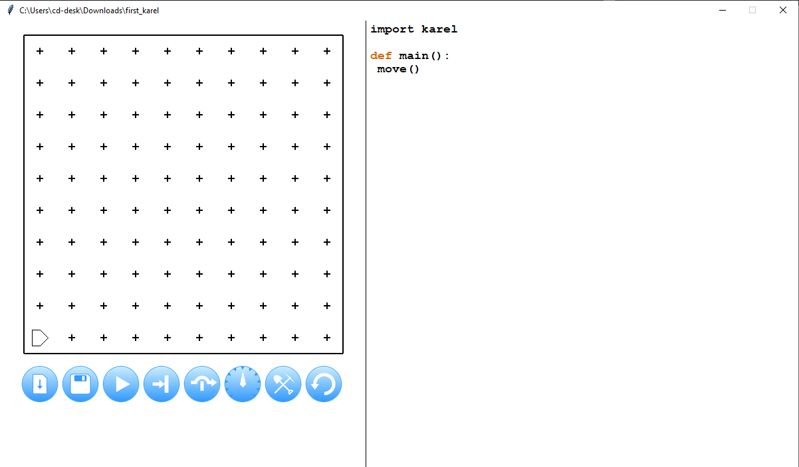

Karel 2
W1D2: 27 Aug
Announcements
- Welcome to CS-151: Intro to Programming with Python!
- By FRIDAY 1:00 PM: Fill out this survey
- There are weekly, 1 hour meetings with peer tutors on Wednesday or Thursday.
- Attending these is 10% of your grade.
- Read the instructions carefully and fill out as many times as you can!
- By MONDAY 11:59 PM: "Introductions" assignment. 22 done + 6 start out of 49
- A minimal problem set to familiarize yourself with how to submit coding assignments.
- Links will be posted on the course website and on the Discord.
- They will not be posted on Canvas or via email to help encourage you to use the website and Discord
In general
- Visit the webpage @ cd-public.github.io/courses/cs1f24
- Linked from Canvas
- 2nd Google result for "calvin deutschbein courses"
- 4th Google result for "calvin willamette courses" (easier to spell)
- The syllabus and calendar are there for you - check exam days, mostly.
- Join the Discord server - you got an email invite from me ("ckdeutschbein@")
- Bring a computer if at all possible, or let me know to find you one.
- Set up your computer for the term.
- Website ⇒ Resources ⇒ Setup. Video guides.
- Going to try to make this happen today.
Commands
- Karel can perform 4 actions: Two to move, and two to beep.
Command Action move()Moves Karel forward one intersection in whatever direction they are facing turn_left()Rotates Karel 90 deg counter-clockwise pick_beeper()Picks up a beeper on the ground put_beeper()Places a beeper on the ground - By performing a bunch of actions, one after another, Karel can get up to all manner of hijinks.
- Read more about Karel here.
Example
|


One Solution
move()
turn_left()
turn_left()
turn_left()
move()
turn_left()
move()
turn_left()
turn_left()
turn_left()
move()
pick_beeper()
turn_left()
turn_left()
turn_left()
move()
move()
put_beeper()
Okay... that was fun. Now where do I run this code?
Let's do it
- Go to this Github link: https://classroom.github.com/a/dHMI_RAC
- Create an account and login.
- Instructions on how to do so are here: Create Account
- Click big-ish green button toward the bottom left labelled:
- Wait a moment, then click the link that looks like this:
- Click big-ish green button toward the bottom left labelled:
- Select the last option: "📄 Download ZIP"
- 'ZIP' is a type of file containining other files.
- Find your browser "Downloads"
- Usually a downward pointing arrow ⬇️
- Usually in the top right of Chrome/Safari/etc by the address bar.
- Click on the file within browser "Downloads", and usually an explorer/finder menu opens.
- In the explorer/finder menu, right or double click to "unzip"
- You might be asked for an unzip destination - remember what you pick (or the default)!
Let's do it
- Previously we: downloading and unzipped a ZIP file from Github
- The unzipped "file" is not a folder/directory - it contains other files.
- 'karel.py' is a big scary file that describes how robots work
- 'first_karel.py' is a small file of a few lines we can read an understand.
- 'install.py' is special file to run once to get Karel to work.
- Read more about Karel here.
Sidebar: Setup
- It would be good to get unstuck on setup wherever you are currently stuck now.
- Go to the Resources tab and
- Follow the Prof. Jed Rembold guide, or
- Download & Install Python
- Download Link: Python
- IMPORTANT: Select "Add python.exe to PATH" while installing.

- Download and install a program to edit Python files.
- Download Link: VS Code
Tada!
|
 |
first_karel
- This is the full text of 'first_karel.py':
import karel def main(): move() - The only part of that you have heard of before is "move()"
- You can put whatever you want where move is, like
move() turn_left() turn_left() turn_left() move() turn_left() move() turn_left() turn_left() turn_left() move() pick_beeper() turn_left() turn_left() turn_left() move() move() put_beeper()
import karel
- If we just wrote "move()" in a Python (.py) file, it is unclear what "move()" means:
- Who are what is supposed to move?
- How big of a move?
- What direction?
- How should the programmer be informed of the move?
- Karel.py answers all these questions.
- Karel.py describes an imaginary robot on an imaginary grid
- The imaginary grid gives the size of the move
- The direction the imaginary robot faces gies the direction.
- Karel.py also tells Python how to display this world to us as humans with a pop up.
import karel
- By saying "import karel" at the beginning of a Python (.py) file...
- Python looks for a karel.py file
- Python, hopefully, finds that in the same directory as our .py file
- Python includes and runs all the code in that file
- When it is done, "move()" is clearly defined.
- This is like...
- Turning on a Maps app before hearing directions.
- Saying "hey, can you help with directions" to your copilot/navigator
- Setting expectations at a workshop, e.g. "we are going to do icebreakers"
- We have to configure out computer so we both have clear expectations.
def main():
- After importing, we define something with "def"
- In a ancient coding language called "C", every program needed something called a "main function".
Every C program has a primary function that must be named main. The main function serves as the starting point for program execution. It usually controls program execution by directing the calls to other functions in the program.- Python is a program that is written in C - so there's some C influence.
- Karel is older than Python!
- When you click the play button:

Karel performs the actions beneath and indented from "def main():"
def main():
- This main function determined what to do first.
- We want to do the same with Karel - we want to be clear what actions to take and where to begin.
- We can think of main as a way specify that when we say "turn left" as:
turn_left() - ... that we mean "turn left now" not, say, there may be a left turn in the future.
- We can think of main as a way specify that when we say "turn left" as:
- When I talk to driver, the difference between "our next turn is a left" and "turn left here".
- What is the difference? How would we articulate this to a robot? (like Gemini)
Your turn:
- Update "first_karel.py" to move Karel to one of the four centermost squares.
- You decide the square.
- You decide which way Karel points once arrived.
- Challenge problem: Gatorque. (I've learned maybe its stylized "Gatorcue?" Does anyone know?)
- Download this 'world' (.w) file.
- "karel.py" knows how to read world (.w) files.
- Since this world (.w) file has the same name as the Python (.py) file (that is, 'first_karel'), "karel.py will load automatically if they are in the same folder.
- Update "first_karel.py" to go find a delicious snack.
Closing Thoughts
- We can use "def" to make collections of actions other than "main".
- We can treat these collections the same way we treat "move()" and "turn_left()"
- We can make, for example, "reverse()":
def reverse(): turn_left() turn_left() - Test this, and collections of actions of your own!
Announcements
- Welcome to CS-151: Intro to Programming with Python!
- By FRIDAY 1:00 PM: Fill out this survey
- There are weekly, 1 hour meetings with peer tutors on Wednesday or Thursday.
- Attending these is 10% of your grade.
- Read the instructions carefully and fill out as many times as you can!
- By MONDAY 11:59 PM: "Introductions" assignment.
- A minimal problem set to familiarize yourself with how to submit coding assignments.
- Links will be posted on the course website and on the Discord.
- They will not be posted on Canvas or via email to help encourage you to use the website and Discord